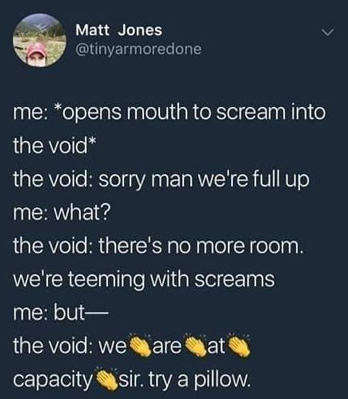

"Nirvāna is not annihilation. It’s not disappearance into a sort of undifferentiated void."
--Alan Watts
“You can only be afraid of what you think you know.”
--Jiddu Krishnamurti
"It's always fear beneath the surface, no matter how it manifests.
People don't like to have their version of reality f**ked with. Try it if you still need to get it out of your system, but prepare yourself for unpleasant results."
--Jed McKenna
Years ago while sitting on my bed, I had what some call an awakening experience. This turned out later to be one of several, though I didn’t know that then.
I wasn’t looking for enlightenment, in fact couldn’t care less about making such a thing happen.
Regardless here it was- a sudden knowing that Judy was a hologram. A sudden watching the lifetime movie of creating, projecting and protecting that “Judy” image. Knowing that an image is not a person.
Seeing that Judy had never been more than a dreaming, with no location, no center. Seeing that even what appeared to be her body, and others’ bodies, and the cat, and the bed, were false concepts.
If she was anything, she was Experiencing, solidified into an experience-er.
All of which literally somehow knocked Judy’s non-body right off the bed.
And from the floor, can you guess came next?
Do you imagine it was blissful, peaceful, transcendent?
No.
What came next was fear.
Well, terror, to be more accurate. Big fat unreasoning terror.
After all, I had been a person, a self, with a history, and preferences, and body. I knew who I was.
Ok sure, I didn’t like her much, but at least I had the reassurance of knowing who I was dealing with.
And then an unasked-for flash seemed to turn a clear obvious Me into a clear obvious Naught.
Void. Empty. Nothing.
No self. No me. No Judy.
Gone.
Something that once was, something I could count on with familiarity- good ol’ ME, MY self- somehow now wasn’t.
Eek.
In the years since that time, I’ve discovered that it’s actually very common for folks to be terrified after getting a glimpse that they’re not what they thought.
I mean, are we supposed to enjoy being here and then suddenly gone and unfindable? Are we supposed to enjoy that huge new lack where there wasn’t lack before?
Though on closer scrutiny, the whole idea is kind of wacky really.
First, because we’re saying the self is so powerful that it can - and does- make itself disappear just by seeing something.
And second, yes we might mourn the loss of illusion, loss of importance, loss of being center of all things.
But since we’ve just seen that none of that was ever there to begin with, what exactly has gone missing?
What is afraid of its loss? What is being mourned, and what is mourning?
How nice that fear happens just as we are supposedly being set free of the false burden of self.
Turns out fear is an effective subject-changer, calling attention away from, “Oh!”and sending it right back to, "I'm the one right here, feeling stuff."
Conveniently resolidifying the sense of self, and bringing us back to the familiar, habitual Me.
Reifying the sense of Me once again.
So the panic of, “Oh no what happens to Me now?” simply continues the business-as-usual importance of self.
Funnily enough. (Are you laughing yet?)
Because of course we’re also still here.
Same bed, same past, same personality, same likes and dislikes.
The story of Me carries on.
Nothing is gone.
I mean, where would it go?
Besides, what can be lost if it was never there to begin with?
Not to mention, if we know there’s a void, then there’s a Me that knows this.
In which case, we’re not gone, and therefore, there’s no void.
Y’know?
Meanwhile, whatever we are,
whatever that is,
it continues to be what it has always been.
Regardless of whether we suddenly “see through it” or not.
Emptiness is not empty.
There is no void.
Nothingness is not possible.
Because there has to be something, in order for there to be nothing.
Now of course, we’re free to be afraid. And of course fear is fine.
It’s just perhaps unnecessary, as we see the possible ploy of distraction.
Because even if there is indeed no self, and never has been,
whatever remains is
not nothing.
It might even be the opposite of nothing.
It might even be
quite something.
"That which is unreal never is, and that which is real never is not."
--Krishna
"We are nothing, let us be all."
--Tony Parsons
"Since in reality all is void,
Whereon can the dust fall?"
--Hui Neng
"Being nothing, I am all. Everything is me, everything is mine.
“No me No you! It’s all a concept!”
--Nisargadatta
Scary Void
